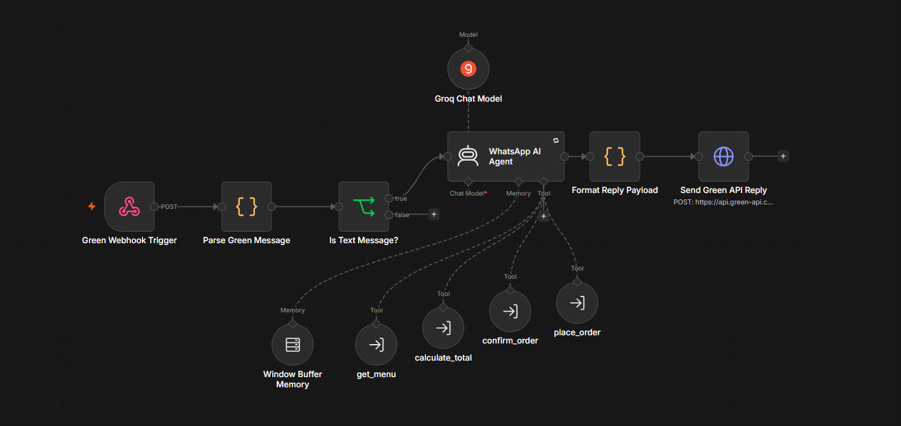
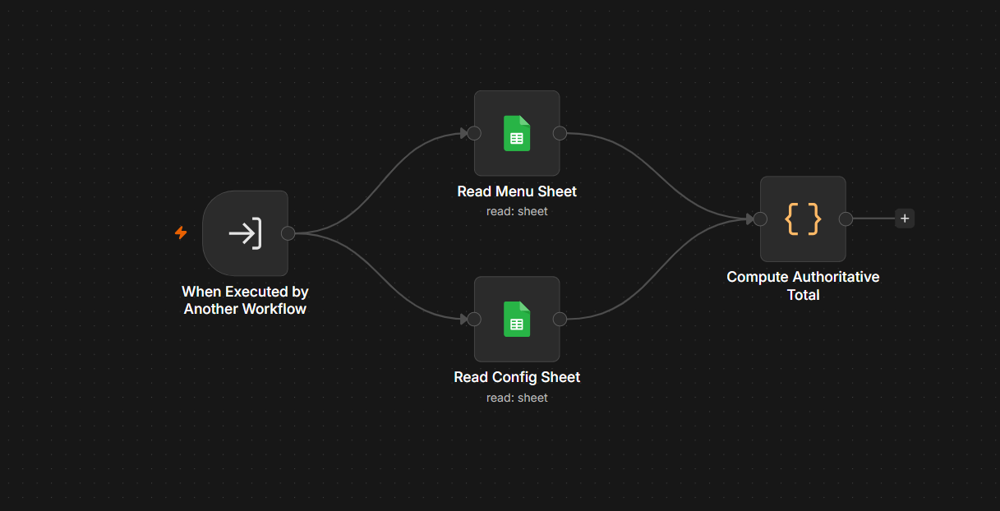
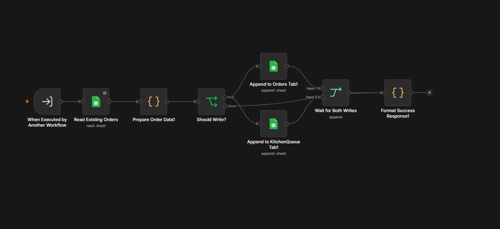
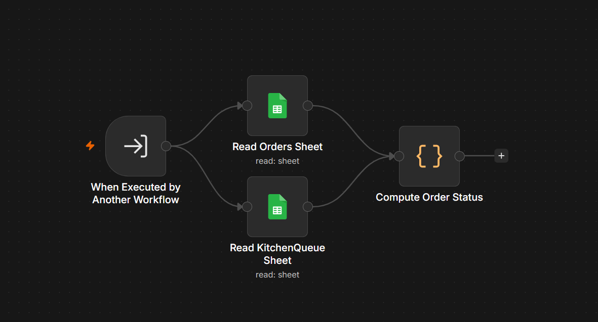

Receive & normalize
The Green API webhook receives events. Parsing code extracts sender identity and text, normalizes the phone number, and ignores events or payloads that do not contain supported text.
Webhook → Parse → FilterDineFlow AI turns a restaurant’s WhatsApp inbox into an ordering channel—understanding requests, checking menu prices, confirming the basket, and routing orders into the kitchen workflow.
The existing walkthrough demonstrates the WhatsApp experience. Watch the customer request a menu, build an order, review the computed total, and move through confirmation.
The main workflow receives incoming events, normalizes the message, filters unsupported payloads, and hands valid text to the AI agent. The agent is connected to memory and purpose-built tools; the response is then formatted and sent back through Green API.

The Green API webhook receives events. Parsing code extracts sender identity and text, normalizes the phone number, and ignores events or payloads that do not contain supported text.
Webhook → Parse → FilterThe AI agent interprets the customer's message and can call the connected tools for menu retrieval, price calculation, order confirmation, and order placement.
Groq chat model + toolsWindow Buffer Memory uses the customer phone number as its session key, so follow-up messages can be associated with the same conversation context.
Phone-based session keyThe result is shaped into the expected reply payload and sent through the Green API endpoint, completing the message round trip.
Format → Green APIWhy separate the steps? Parsing and filtering happen before the LLM is called. Tool workflows keep operational actions—such as pricing and order persistence—separate from the language model’s conversational reasoning.
These are the implementation details worth understanding—not just a list of tools, but why responsibilities are divided across the workflow.
The workflow uses the customer's normalized phone number as the memory session key and configures a context window length of 10. This helps the agent interpret short follow-ups such as “confirm” in relation to the current order.
The calculate_total tool reads the Menu and Config sheets, then uses code to resolve requested items and quantities against stored data. The LLM does not need to invent prices or do the arithmetic from memory.
The documented agent flow calculates the requested basket and asks the customer to confirm. On confirmation, it invokes the order-placement tool with the order data and total from the conversation.
The placement workflow prepares order data and branches into writes for the Orders sheet and KitchenQueue sheet. It waits for both write branches before formatting the success response.
The main workflow delegates operational responsibilities to smaller workflows. The tree below keeps the WhatsApp entry point central while showing what each supporting workflow contributes.
Reads menu data for the agent to answer menu questions and guide item selection.
workflows/get_menu.jsonReads Menu and Config sheets, then computes an authoritative order subtotal.
workflows/calculate_total.jsonSeparates the order-confirmation step from the main conversation flow.
workflows/confirm_order.jsonWrites order information into Orders and KitchenQueue and returns a success result.
workflows/place_order.json.jsonget_order_status, send_payment_link, and dashboard-related workflows. They are listed in the source, but this page keeps its main explanation focused on the four tools shown in the supplied main workflow diagram.
Menu and configuration data feed the pricing code.

Two sheet writes are coordinated before the response is formatted.

Reads Orders and KitchenQueue to compute a status result.
A practical automation stack: a workflow engine for orchestration, a chat model for natural language, sheets for operational data, and a WhatsApp bridge for message delivery.
DineFlow AI explores how conversational AI can fit into a familiar customer channel while keeping pricing and operational actions grounded in connected data and workflows.